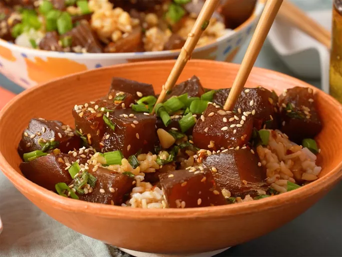

Ahi Tuna Poke

Description
Poke (pronounced POE-keh) is a Hawaiian dish. Its name derives from the Hawaiian word "to slice or cut." The name is a good indicator of what the dish is because poke is traditionally sliced raw fish (usually tuna or octopus) that's marinated in a savory, umami-rich sauce made with soy sauce, sesame oil, and green onions.
Poke can be eaten as is, but it's typically served in a poke bowl with other ingredients — like rice, vegetables, and hot sauce.
Preparation Time
- Prep Time: 10mins
- Additional Time: 2 hrs
- Total Time: 2 hrs 10 mins
Ingredients
- 2 pounds fresh tuna steaks, cubed
- 1 cup soy sauce
- ¾ cup chopped green onions
- 2 tablespoons sesame oil
- 2 tablespoons finely chopped macadamia nuts
- 1 tablespoon toasted sesame seeds
- 1 tablespoon crushed red pepper (Optional)
Directions
- Gather all ingredients.
- Place tuna in a medium non-reactive bowl. Add soy sauce, green onions, sesame oil, sesame seeds, macadamia nuts, and red pepper flakes; mix well. Cover and refrigerate at least 2 hours before serving.
- Serve over rice.
Nutrition Facts (per serving)
| Calories |
396 |
| Fat |
14g |
| Carbs |
9g |
| Protein |
58g |